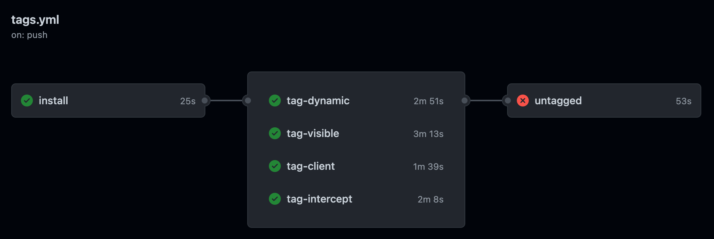
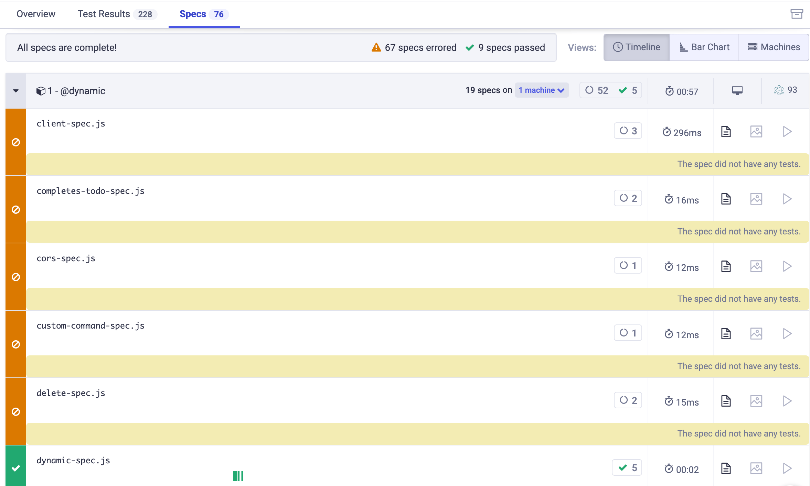
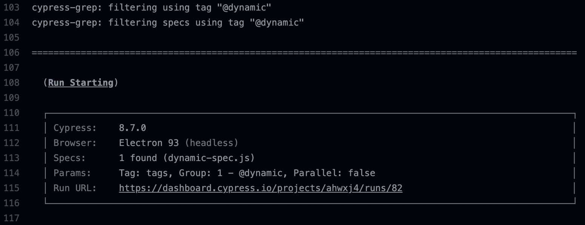
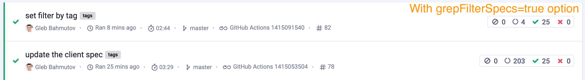
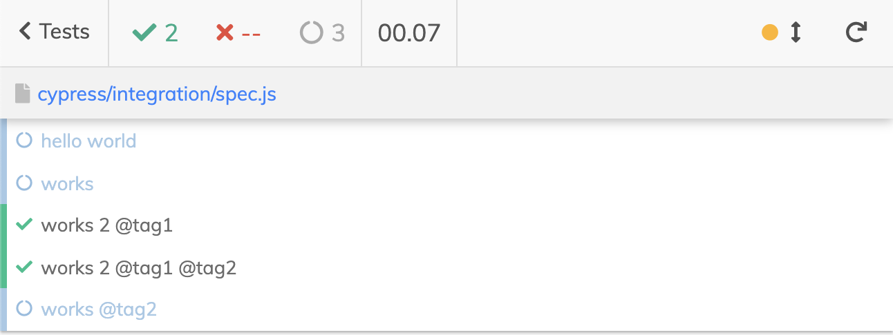
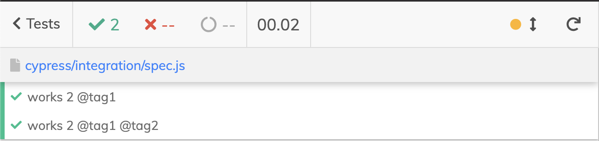
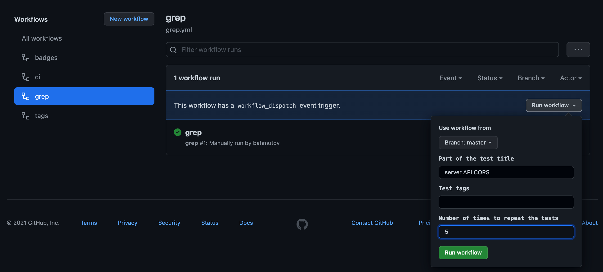
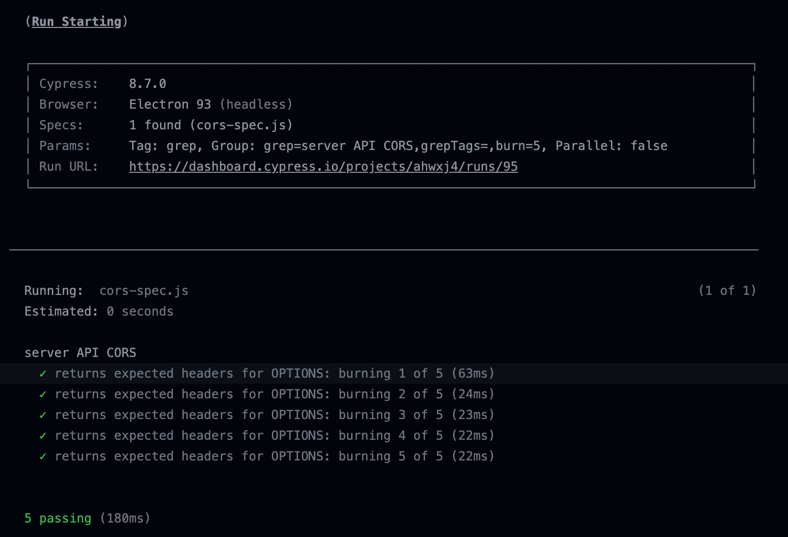
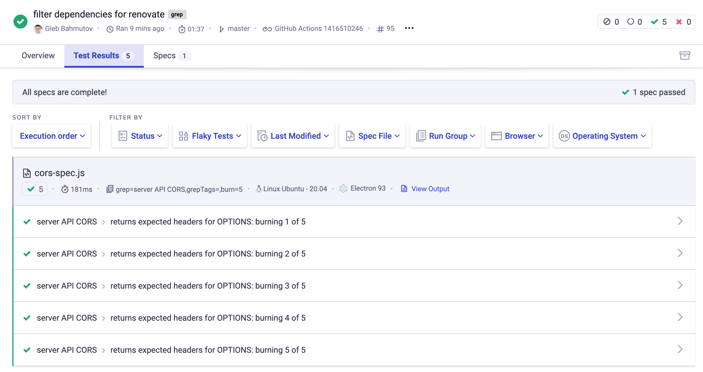

Recently I have written the cypress-grep that can be useful to run the tests selectively by part of the title, or by using tags. For example, a spec like this one:
1 | it('loads the page', () => ...) |
We can run just the first test by installing the plugin and using the grep string passed via Cypress environment variables
1 | npx cypress run --env grep="loads" |
We can run the second test by using the tag
1 | npx cypress run --env grepTags="@search" |
All other tests in the file will be pending, as if they were using it.skip method.
1 | - loads the page |
Skipping the tests this way does not save you on the Cypress Dashboard bill - the pending tests do not count towards the monthly billing plan's quota. But having a new browser instance open, bundling the spec, and the immediately exiting because there might be no tests to run in a spec does cost you time and CI money.
In this blog post, I will show how to efficiently grep tests on CI to save the CI time, and omit the noise from the tests that were filtered out.
🎁 You can find the example source code in the repo bahmutov/todo-graphql-example and see the recorded test runs at its public Dashboard page.
The GitHub Actions workflow
In my project I have a few suites and tests tagged with different features. I also have a GH Action workflow tags.yml that runs tests tagged with each feature name separately. For example, the first test job runs all the tests with the tag @dynamic
1 | tag-dynamic: |
In parallel, another test job runs all the tests with the test @visible, here is the relevant difference
1 | env: grepTags=@visible |
There are test jobs that run only the tests tagged @client and @intercept. At the end, there is a job that runs all untagged tests.
1 | untagged: |
The tag test jobs run in parallel, and the untagged test job runs at the end.

The empty specs
There are 19 specs currently in the project. When running just the tests tagged @dynamic, what happens to the specs that have no tests tagged with that tag? They show up as "error" in the Cypress Dashboard as the next screenshot shows.

You can see that the Dashboard run things there are a lot more specs than we know there are in the project - because it counts the same specs again and again when they are executed by the test job tag-dynamic, then by tag-visible, then by tag-intercept, etc. And most of these specs have no tests with the tag we are interested in - thus they show up as errors, and just take up the CI time.
We can do better. The plugin cypress-grep has an option to "preview" the spec file and if it has NO tag or grep string we are looking for in the test title, completely filter out the spec file. We can turn this option using the environment variable:
1 | env: grepTags=@dynamic,grepFilterSpecs=true |
Even better - to avoid accidentally forgetting to use this option, we can set it in the cypress.json configuration file.
1 | { |
The tag-dynamic CI job immediately becomes much faster - because it prefilters all 19 spec files, and only runs the spec with that tag found.

Every test job became faster
1 | tag-dynamic 2m 51s => 1m 7s |
Pretty nice savings, and all because we do not have to open 18 spec files once by one only to find out that there are no tests to execute.

Note: the untagged test job is unaffected by the filtering, since the grepUntagged=true option is not compatible yet with the option grepFilterSpecs=true, see issue #85.
Omitting filtered tests
If we have a spec with multiple it tests, and we grep, the filtered tests are pending using it.skip. This might create noise in the Command Log and in the test analytics for the run. For example, this spec has more filtered tests than running tests when using grep="works 2"

We can use another option to omit the filtered tests completely. It "hides" the tests that should not run.
1 | { |
The Command Log and the test analytics now contain only the tests we run

In the todo-graphql-example, this removes all skipped tests. For example, before we grepped tests with tag "@visible"
1 | TodoMVC with GraphQL cy.intercept |
After we added the grepOmitFiltered=true option, only the tests with the tag are in the output
1 | TodoMVC with GraphQL cy.intercept |
This is a much nicer output.
Manual workflow
We can add a new workflow to our project that we can trigger manually any time we want to run a specific test, or a group of tests using a tag. You can find this workflow in the file grep.yml.
1 | name: grep |
Let's see if the following test in the "cors-spec.js" is reliably. Let's run just this test 5 times in row. From the GitHub UI start the workflow with the following parameters:

The grep, grepTags, and burn workflow parameters are passed to Cypress via env: ... action param. Only a single spec file has a test with a test title including the grep string we have entered. And the same test was "burn" or executed five times in a row.

The Cypress Dashboard shows the single spec file with 5 tests executed, with its own group name that includes our parameters
